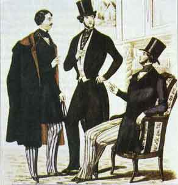

La rivoluzione industriale ha portato profondi cambiamenti nella società e nell'economia. le figure importanti nella trasformazione economica sono gli imprenditori. Gli imprenditori della rivoluzione industriale erano persone che avevano molte idee su come usare nuove tecnologie e risorse per rendere la produzione più veloce e migliore. Uno degli esempi più noti è Richard Arkwright, un tessitore e inventore britannico che ha rivoluzionato l'industria tessile con la creazione del telaio meccanico. Questa invenzione ha permesso una produzione tessile su larga scala, segnando l'inizio di una nuova era industriale. Un altro imprenditore importante fu James Watt,l'inventore del motore a vapore migliorato. Gli imprenditori durante la rivoluzione industriale hanno cambiato non solo la tecnologia, ma anche il modo in cui le persone lavoravano. Hanno introdotto fabbriche e linee di produzione per rendere le cose più velocemente ed economicamente. Ma questo ha portato a problemi, come condizioni di lavoro difficili con lunghe ore e salari bassi. Le persone si sono ribellate, formando sindacati e chiedendo migliori condizioni. Gli imprenditori hanno avuto un ruolo importante nello sviluppo economico e tecnologico, ma hanno anche causato problemi sociali che ancora oggi ci influenzano. gli imprenditori non solo hanno rivoluzionato l'industria manifatturiera, ma hanno anche influenzato settori cruciali come l'agricoltura e la medicina, introducendo innovazioni che hanno migliorato la produttività, la salute e la qualità della vita. Ad esempio, Joseph Lister ha introdotto l'antisepsi nelle procedure chirurgiche, riducendo significativamente il tasso di infezioni post-operatorie.l'introduzione di macchinari agricoli ha rivoluzionato il settore agricolo, aumentando la produttività, consentendo di alimentare una popolazione in crescita e di rifornire le fabbriche industriali di materie prime.